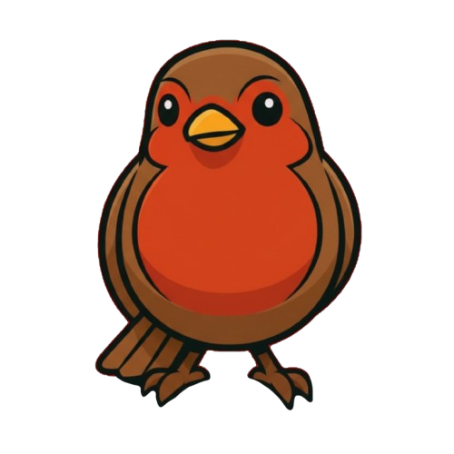

FUSALMO · El Salvador 🇸🇻
Para usar RoboRobin necesitas ingresar tu API key de Anthropic. Se pedirá cada vez que accedas.
Obtén tu clave en console.anthropic.com
Asistente de robótica · Competición Nacional 2026